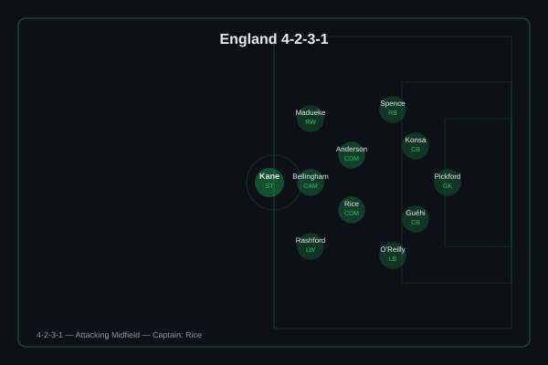
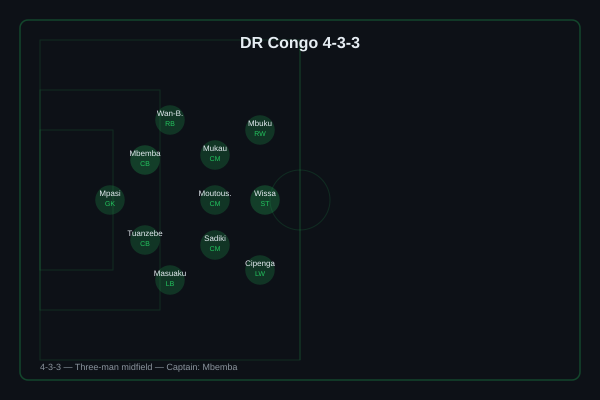
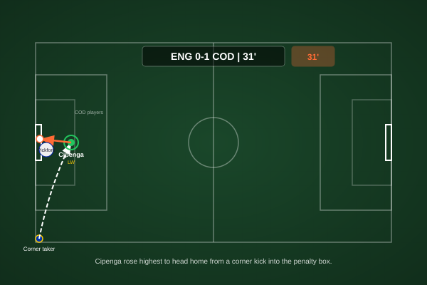
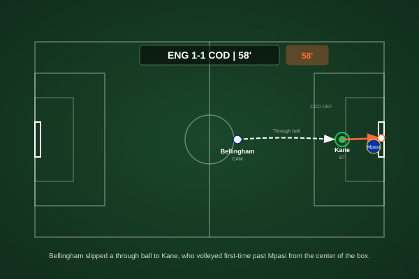
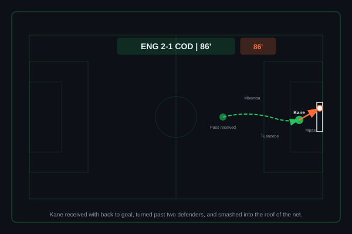
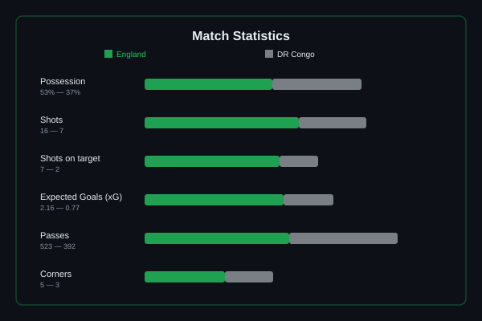

England vs DR Congo
DR Congo stunned England after 7 minutes when Cipenga cut inside from the left and fired past Pickford at the near post. England dominated possession but struggled to break down a compact Congolese defence until Kane headed in Gordon's cross in the 75th minute. Kane completed the turnaround in the 86th minute with a brilliant individual goal - dancing past two defenders before hammering into the roof of the net.


England (4-2-3-1): Pickford; Spence, Konsa, Guéhi, O'Reilly; Anderson, Rice (c); Madueke, Bellingham, Rashford; Kane. DR Congo (4-3-3): Mpasi; Wan-Bissaka, Mbemba (c), Tuanzebe, Masuaku; Mukau, Moutoussamy, Sadiki; Mbuku, Wissa, Cipenga.
England's first half was defined by frustration. Despite enjoying over 60% possession before the break, Southgate's side struggled to find rhythm against a disciplined DR Congo mid-block that compressed the central channels and forced England wide, where crosses into the box were routinely gobbled up by Chancel Mbemba and Axel Tuanzebe. Bellingham dropped deep to find the ball but lacked runners ahead of him; Rashford was isolated on the left; and the absence of an advanced creative presence between the lines made England's build-up predictable and easy to defend.
The introduction of Anthony Gordon and Bukayo Saka at half-time changed the dynamic entirely. Gordon's direct running stretched the Congolese back line in a way Rashford hadn't managed, while Saka's ability to receive in tight spaces gave England a foothold in the right-half space that had been entirely vacant in the first period. The equalizer came from exactly that pattern - Gordon driving to the byline and picking out Kane, who had lost his marker with a clever late run across the near post.
The key tactical moment was Southgate's willingness to make a double change at half-time rather than waiting until the 60th or 70th minute. It was a decisiveness that has sometimes been absent from England's tournament football, and it completely changed the trajectory of the game - and potentially England's entire World Cup campaign.

A moment of individual quality that England simply didn't see coming. Cipenga collected the ball on the left touchline, took a touch inside to escape Konsa's initial pressure, and unleashed a venomous strike across goal that beat Pickford at his near post - a finish the Everton keeper will feel he could have done better with, though the power and placement were both exceptional. For DR Congo, it was the perfect start: an early lead that allowed them to sit deep, protect what they had, and ask England to find a way through.

The goal England's second-half dominance deserved. Gordon, introduced at the break, drove at the Congolese defence and delivered an early cross from the left that looped invitingly towards the penalty spot. Kane, who had spent most of the match dropping deep in search of involvement, made a clever dart across the near post - losing Tuanzebe with a subtle change of direction - and directed his header back across goal and into the far corner. A captain's goal: not the most spectacular of his career, but arguably the most important of this tournament.

If the first was a poacher's finish, this one was pure artistry. Kane picked up the ball 25 yards from goal, facing up Masuaku and Mukau. A drop of the shoulder sent Masuaku sliding past him; a second feint opened up the space between both defenders; and Kane drove forward before unleashing an unstoppable strike that flew into the roof of the net from twelve yards. The kind of goal that defines tournaments - a moment of individual genius from a world-class player when his team needed it most.

53/37 possession split favours England (10% neutral), 16-7 total shots, 7-2 shots on target, 2.16 xG vs 0.77 xG - a game England eventually controlled but had to work desperately hard to win.

This was the performance that reminded everyone why Harry Kane remains England's most indispensable player. For 74 minutes he was isolated, frustrated, and starved of service in a system that couldn't get him involved. But great strikers don't need many chances - they need one. His header was a textbook centre-forward's finish, and his second was the kind of individual brilliance that separates elite goalscorers from very good ones. Kane's heatmap tells the story of a player who never stopped searching for the game, even when the game wasn't finding him.
Illustrative reconstruction based on known event locations, not raw GPS tracking data.
Got right: Kane being the decisive figure for England was correctly identified, as was the expectation that England's depth would prove decisive in the second half - Southgate's bench changed the game exactly as predicted. The pre-match analysis correctly flagged the risk of DR Congo sitting deep and forcing England to find creative solutions.
Got wrong: the predicted comfortable 3-0 win badly underestimated DR Congo's defensive organisation and their threat on the counter. Cipenga's individual quality wasn't flagged prominently enough in the pre-match analysis, and the impact of Gordon and Saka was under-appreciated relative to what the starting XI offered. The scoreline prediction was too generous to England and too dismissive of a Congolese side that came to compete, not just to participate.
England
Kane - 9.0 â MOTM (two goals, captain's performance)
Gordon - 7.5 (assist, transformed the game after half-time)
Bellingham - 6.5 (worked hard, limited space)
Konsa - 5.5 (beaten too easily for the goal)
DR Congo
Cipenga - 8.0 (superb individual goal, constant threat)
Mbemba - 7.0 (captain's display, marshalled defence well)
Mpasi - 6.5 (no chance on either Kane goal)
Wan-Bissaka - 6.0 (solid defensively, limited going forward)
- Southgate's willingness to make proactive half-time changes rather than reactive ones could be the defining tactical trait of England's tournament - it saved them here and may need to again against stiffer opposition.
- England's first-half struggles against a compact block remain a genuine concern - against better-organized defences in the later rounds, they may not get 45 minutes to find a solution before falling behind.
- DR Congo can leave the tournament with immense pride - this was not a backs-to-the-wall smash-and-grab performance but a coherent tactical display by a team that believed they belonged, and for 74 minutes they were right.
England face Mexico in Round of 16 at the Estadio Azteca. DR Congo exit with heads held high.